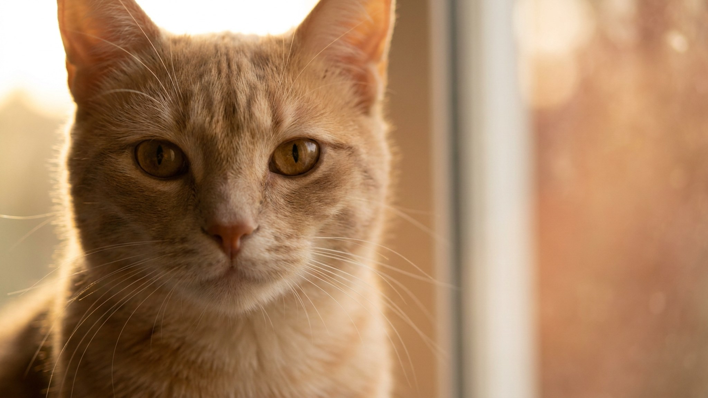

«Моей собаке 3 года — значит, по-человечески ей 21» — эту формулу знают все. Её придумали в середине прошлого века, и с тех пор она держится как факт. На деле она неверна: питомцы стареют нелинейно, а темп зависит от вида, размера и породы. Разбираем, как это работает — и почему это влияет на то, как вы за ним ухаживаете.
🐾 Не уверены, что это опасно?
Опишите симптом в AnimaLife — AI-ветеринар за минуту подскажет, что в пределах нормы, а когда пора к врачу.
Формула появилась из простой пропорции: средняя продолжительность жизни собаки тогда составляла около 10 лет, человека — около 70. Отсюда и коэффициент 7. Проблема в том, что это средняя арифметика, а не биология: она не учитывает, что разные периоды жизни идут с разной скоростью.
Щенок за первый год жизни проходит путь от новорождённого до половозрелого подростка — это примерно 12–15 «человеческих» лет, а не 7. Зато после 3–4 лет темп замедляется. У кошек картина похожая: первые два года — стремительное взросление, дальше — плавное.
Котёнок в 1 год — это примерный аналог подростка 14–16 лет по физическому развитию. В 2 года — молодой взрослый около 24 лет. Дальше каждый год добавляет примерно 4 «человеческих» года.
У собак ключевой фактор — размер и масса тела. Мелкие породы (до 10 кг) живут дольше и стареют медленнее крупных. Крупные и гигантские породы взрослеют позже, но и стареют быстрее.
🐾 Питомец ведёт себя странно?
AnimaLife расшифрует поведение кошки и собаки и подскажет, что делать. Попробуйте бесплатно прямо в мессенджере.
🐾 Понравился разбор?
Подпишитесь на канал — каждый день разбираем по одному тревожному симптому у кошек и собак: что в пределах нормы, а когда пора к врачу. Подпишитесь, чтобы не пропустить разбор, который может спасти здоровье вашего питомца.
Понимание «биологического» возраста питомца помогает вовремя скорректировать режим — не ждать, пока появятся видимые изменения.
Возраст — не повод для беспокойства, а ориентир для внимания. Питомцы стареют иначе, чем мы, но в своём темпе живут полноценно при правильном уходе.
Материал носит информационный характер и не заменяет очную консультацию ветеринара.